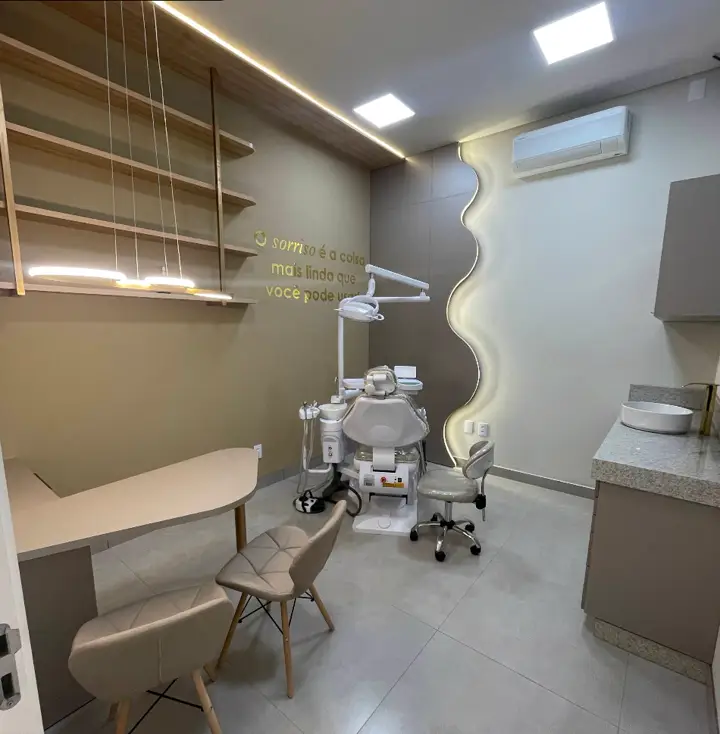
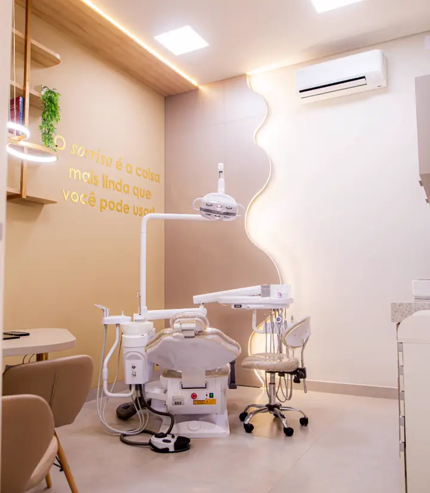
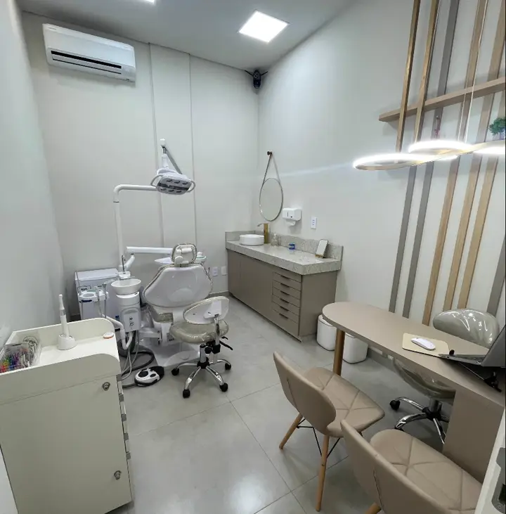
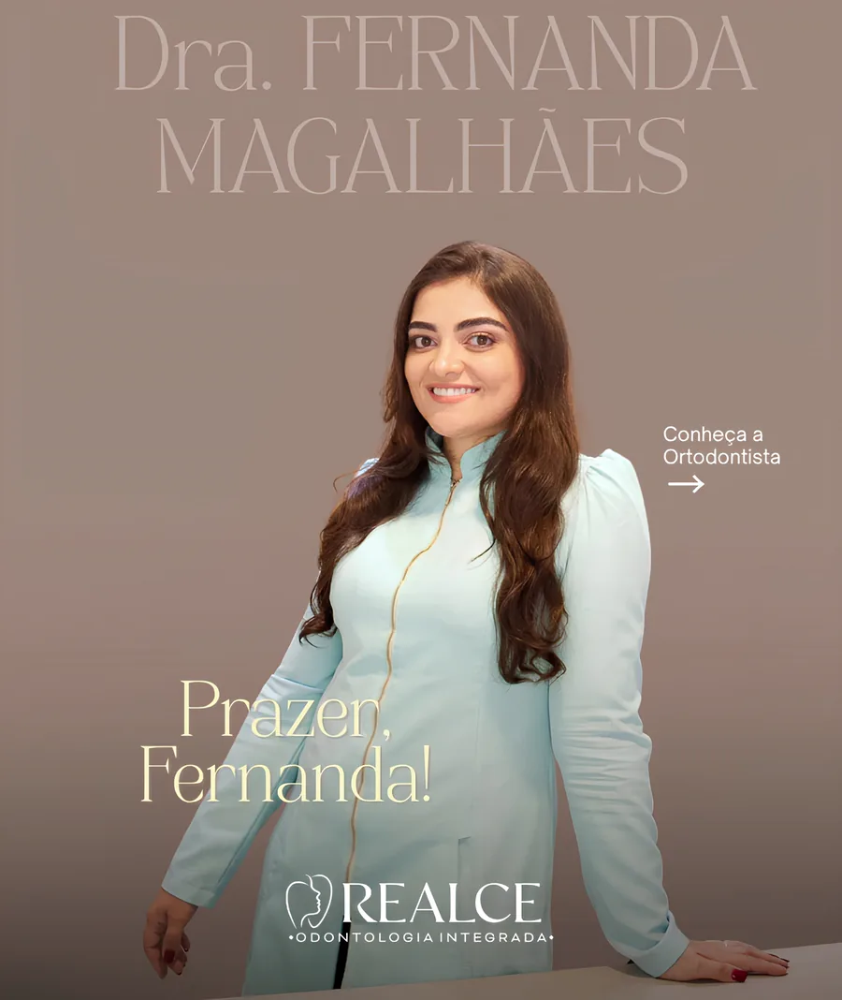
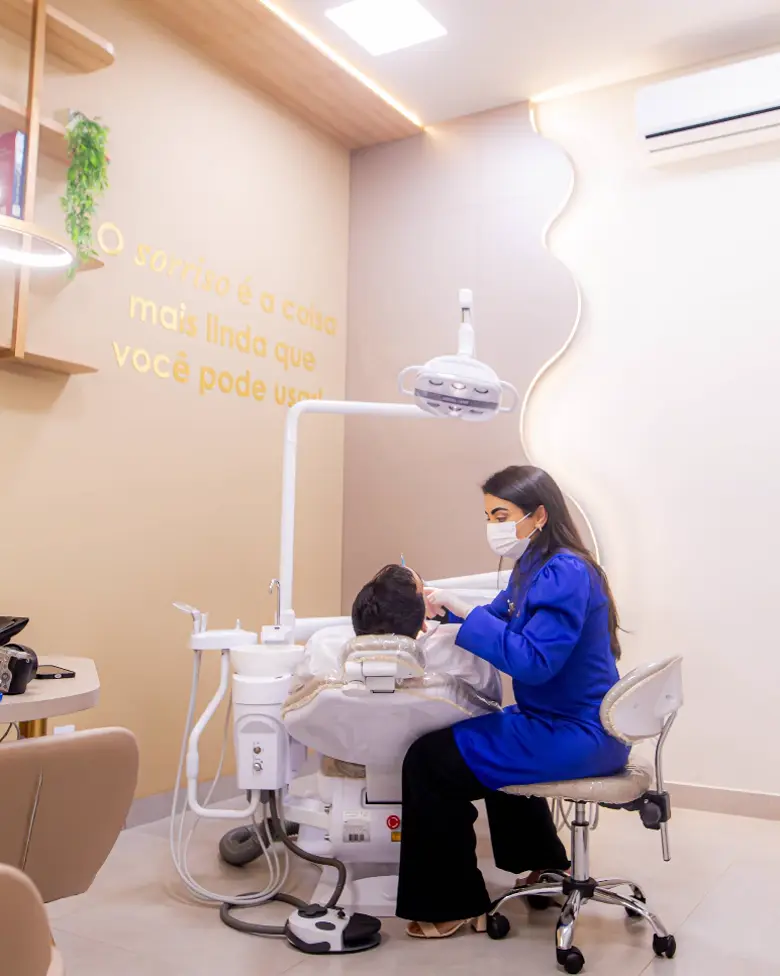
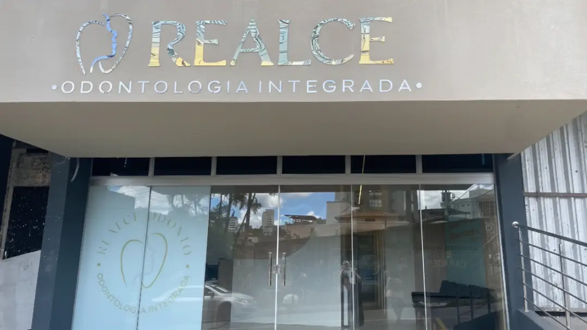

I
A mesma dentista, do início ao fim
Seu caso é acompanhado do começo ao fim, com o histórico sempre à mão. A cada retorno a conversa continua de onde parou.
4,9 em 105 avaliações no Google
Ortodontia, clareamento, implantes e clínica geral, no Bairro Alvorada.
Seu caso é acompanhado do começo ao fim, com o histórico sempre à mão. A cada retorno a conversa continua de onde parou.
Tratamento objetivo e sem demora. Na primeira consulta você entende o que precisa ser feito, em quantas etapas e em quanto tempo.
Antes da estética vem a saúde. Cada plano de tratamento parte do que a sua boca precisa, não de um pacote pronto.
Odontologia integrada: da manutenção do dia a dia ao alinhamento e à estética do sorriso, no mesmo lugar, sem precisar procurar outra clínica a cada etapa.
Aparelho para alinhar os dentes e corrigir a mordida, de crianças a adultos, com manutenção acompanhada de perto.
Clareamento feito depois da avaliação da saúde da gengiva e do esmalte, para devolver a cor natural dos dentes.
Reposição de dente perdido com planejamento prévio e acompanhamento em cada etapa da recuperação.
Profilaxia e orientação de higiene para manter a gengiva saudável — a base de qualquer tratamento que dure.
Restauração de dente danificado ou cariado, com material que acompanha a cor do seu dente.
Extração de sisos, mesmo os inclusos, com planejamento prévio e acompanhamento da recuperação.
Acompanhamento do crescimento e da troca dos dentes, num ambiente pensado para a criança se sentir à vontade.
Aplicação de toxina botulínica, com avaliação individual antes de qualquer procedimento.
Clínica acolhedora, com recepção ampla, sala de planejamento e consultórios equipados. Ambiente claro, silencioso e bem cuidado, do jeito que dá gosto de esperar a sua vez.






“Ótimo atendimento e Dra. Fernanda muito simpática.”
“Clínica excelente! A começar pela recepção acolhedora e educada da equipe de secretários! Os dentistas são extremamente competentes, cuidadosos e muito tranquilos.”
“Tirou meu medo de dentista ao extrair dois sisos inclusos no mesmo dia, sem nenhuma dor ou qualquer contratempo. Já indiquei a umas 8 pessoas que trabalham comigo.”
“Recebi uma indicação da Dra. Fernanda e adorei. Atendimento impecável tanto dela quanto do Thomás. Sempre fui muito bem recepcionada e os tratamentos que fiz até agora tiveram resultado efetivo.”
“Excelente atendimento, ambiente super aconchegante e organizado. O atendimento da Dra. Fernanda foi espetacular!”
“Recomendo muito a Dra. Fernanda por sua dedicação em fornecer cuidados dentários de alta qualidade, aliados à sua empatia e atenção aos pacientes.”
Se você tem plano pela empresa ou pelo serviço público, pode ser que já esteja coberto aqui. Na dúvida, chame no WhatsApp que a gente confere para você.


Cirurgiã-dentista com especialização em Ortodontia, responsável técnica da Realce Odontologia Integrada, em João Monlevade.
São 320 publicações e 1.772 seguidores. Por lá dá pra ver o consultório por dentro, as dúvidas que mais chegam e como é o atendimento antes de marcar a primeira consulta.
Pelo WhatsApp (31) 97215-9568. É o número da clínica, e quem responde é a nossa recepção, dentro do horário de atendimento.
Sim. Atendemos PASA, Saúde AMS, IPSM, Odontoprev (Rede Unna), BB Dental, Bradesco Dental e Amil Dental. Se o seu plano for outro, mande uma mensagem que a gente confere para você.
A Dra. Fernanda Magalhães é a responsável técnica da clínica e acompanha os casos de ortodontia. O seu histórico fica registrado aqui, então você não precisa recontar tudo a cada retorno.
Sim. A Dra. Fernanda atende casos ortodônticos de crianças a adultos, e a clínica acompanha o crescimento e a troca dos dentes desde cedo.
A primeira consulta é de avaliação: a dentista examina, explica o que precisa ser feito e em quantas etapas. O tratamento é planejado com você a partir daí.
Na Rua Negrão de Lima, 51 — Bairro Alvorada, João Monlevade/MG, CEP 35930-054. O mapa está logo abaixo.
De segunda a sexta-feira, das 9h às 12h e das 14h às 18h. A clínica fecha para o almoço entre 12h e 14h, e não atende aos sábados e domingos.
Entrada, banheiro e estacionamento acessíveis para cadeira de rodas.
No local, coberto e gratuito.
Cartão de crédito, cartão de débito e pagamento por aproximação. Atendimento com hora marcada, agendada pelo WhatsApp.
Espaço seguro para a comunidade LGBTQ+ e para pessoas transgênero, com banheiro de gênero neutro.

| Segunda a sexta | 09:00 – 12:00 · 14:00 – 18:00 |
|---|---|
| Sábado e domingo | Fechado |